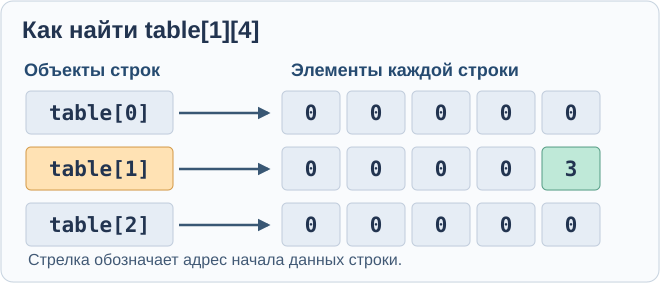

Массивы, векторы и итераторы
Массив хранит элементы одного типа по порядку. Номер позиции называется индексом. Отсчёт начинается с нуля, поэтому запись a[2] выбирает третье число.
| Индекс | 0 | 1 | 2 | 3 |
|---|---|---|---|---|
Значение a[i] |
2 | 4 | 6 | 8 |
У этого массива четыре элемента. Последний из них — a[3], его значение равно 8.
Фиксированный и переменный размер
| Запись | Содержимое |
|---|---|
std::array<int, 4> fixed{2, 4, 6, 8}; |
Ровно четыре числа. Размер известен при компиляции |
std::vector<int> a{2, 4}; |
Два элемента со значениями 2 и 4 |
std::vector<int> b(2, 4); |
Два элемента со значением 4 |
std::vector<int> c(n); |
n нулей. Размер можно определить во время работы |
std::vector<int> empty; |
Пустой вектор |
Для std::array подключай <array>, для std::vector — <vector>. Фигурные скобки с числами перечисляют элементы. Круглые скобки в конструкторе vector позволяют задать размер и начальное значение.
Как проверить индекс
Для обоих контейнеров a.size() даёт количество элементов, a.empty() проверяет, пуст ли контейнер. Оператор a[i] требует допустимого индекса. Метод a.at(i) проверяет границы и при ошибке выбрасывает std::out_of_range. У std::array<int, 4> zeros{}; фигурные скобки обеспечивают нулевую инициализацию всех четырёх элементов. Вызов zeros.fill(7) запишет 7 в каждый элемент.
Как изменить размер вектора
Вектор поддерживает изменение размера. push_back(x) дописывает элемент, pop_back() снимает последний элемент непустого вектора. resize(n) оставляет первые n элементов, если вектор уменьшается, или добавляет новые элементы, если он растёт. assign(n, x) заменяет содержимое на n повторов x.
Встроенный массив
Встроенный массив int raw[4]{} тоже имеет фиксированный размер. При передаче в параметр вида int values[] параметр становится указателем, поэтому для обхода нужна отдельная длина. sizeof raw в области его объявления измеряет весь массив в байтах, а sizeof указателя измеряет только указатель. Для новых учебных решений с фиксированным размером удобнее std::array, где количество элементов даёт size().
Перебор и итераторы
for (int value : a)копирует очередное число вvalue.for (int& value : a)позволяет менять элементы массива или вектора.for (const auto& value : a)читает элементы без копирования. Это особенно полезно для целых строк таблицы.- Если нужен индекс, используй цикл от 0 до
a.size(), заканчивая передsize().
Итератор обозначает позицию. a.begin() указывает на первый элемент, a.end() — на позицию сразу за последним. У пустого контейнера эти позиции совпадают. Вызов *it читает элемент, а ++it сдвигает итератор к следующему. Разыменовывать end() нельзя.
Запись [begin, end) обозначает полуинтервал. Левая граница включается, правая исключается. В векторе можно получить итератор к элементу i как a.begin() + i. Например, диапазон [a.begin() + 1, a.begin() + 4) содержит элементы с индексами 1, 2 и 3, если длина вектора не меньше 4. Для обратного обхода есть rbegin() и rend().
Таблица
std::vector<std::vector<int>> хранит вектор строк. В записи table[i][j] первый индекс выбирает строку, второй выбирает элемент этой строки. Например, std::vector<std::vector<int>> table(3, std::vector<int>(5, 0)); создаёт три строки по пять нулей. Отдельные строки в общем случае могут иметь разные длины, поэтому границу внутреннего цикла надо брать у текущей строки.
Скопируем числа 2, 4, 6 в вектор и прибавим к каждому по единице. Первое из получившихся чисел запишем в таблицу.
#include <array>
#include <vector>
using std::array;
using std::vector;
array<int, 3> fixed{2, 4, 6};
vector<int> values(fixed.begin(), fixed.end()); // Копия диапазона.
for (int& value : values) {
++value; // Меняем элементы, а не временные копии.
}
vector<vector<int>> table(3, vector<int>(5, 0));
table[1][4] = values[0]; // Во второй строке и пятом столбце теперь 3.
После цикла values содержит 3, 5, 7. Запись table[1][4] выбирает вторую строку и пятый столбец. Если индексы приходят из входных данных, для каждого проверь обе границы. Индекс строки должен быть неотрицательным и меньше числа строк, индекс столбца — неотрицательным и меньше длины выбранной строки.
Как процессор доходит до нужной клетки. У vector<vector<int>> элементы внешнего вектора — объекты строк. У каждой строки свой непрерывный участок для чисел. Поэтому сначала нужен адрес данных второй строки. Уже к нему можно прибавить 4 * sizeof(int), чтобы попасть в пятый столбец.

В какую клетку попадёт запись?
Выбери строку и столбец. Посмотри, какой элемент изменит команда записи. Затем попробуй обратиться к элементу сразу за последним столбцом.
| i ∖ j | 0 | 1 | 2 | 3 | 4 |
|---|
При обходе одной строки слева направо соседние числа часто оказываются в одной строке кэша. При переходе к следующей строке её данные могут находиться в другой части памяти. Что такое строка кэша.
Порядок сортировки
std::sort(a.begin(), a.end()) сортирует весь вектор по возрастанию. Третьим аргументом можно передать компаратор. Он отвечает на вопрос «должен ли left идти раньше right?». Для равных по ключу элементов должен получаться false в обе стороны. Поэтому left <= right — неверный компаратор. Сортировка диапазона из n элементов требует O(n log n) сравнений. Порядок равных по ключу элементов не гарантирован.
Сортировка чисел и строк таблицы
Зададим внутри строки порядок «сначала нечётные, потом чётные», а внутри каждой группы — по возрастанию. Затем отсортируем сами строки по элементу с индексом row.size() / 2. В примере все строки непустые. Элемент в центре этой специальной сортировки не обязательно равен медиане по числовому возрастанию.
#include <algorithm>
#include <iostream>
#include <vector>
using std::cout;
using std::sort;
using std::vector;
bool odd_first(int left, int right) {
bool left_is_odd = left % 2 != 0;
bool right_is_odd = right % 2 != 0;
if (left_is_odd != right_is_odd) {
return left_is_odd;
}
return left < right;
}
bool by_middle(const vector<int>& left, const vector<int>& right) {
return left[left.size() / 2] < right[right.size() / 2];
}
int main() {
vector<vector<int>> table{{2, -1, 3, 0}, {4, -5, 1, -2}};
for (auto& row : table) {
sort(row.begin(), row.end(), odd_first);
}
sort(table.begin(), table.end(), by_middle);
for (const auto& row : table) {
for (int value : row) {
cout << value << ' ';
}
cout << '\n';
}
}
После двух сортировок строки выводятся в таком порядке.
-5 1 -2 4
-1 3 0 2
Отрицательное число тоже нечётное, когда его остаток от деления на 2 отличен от нуля. Проверка value % 2 == 1 пропустит, например, -5. После сортировки строк ключ первой исходной строки становится 0, второй — −2. Поэтому вторая перемещается вверх.